Case Study · Computer Vision · Jan 2026 – Present
Pickleball analytics from one camera.
A computer vision pipeline that turns a single rally clip (tripod or broadcast footage) into an annotated video with ball trail, court overlay, bounce markers with line calls, and shot labels, plus a complete stat sheet. Built solo, measured honestly.
TL;DR for the 30-second read
- Input: one camera angle of a pickleball rally. Output: annotated video + machine-readable stats (shot types, line calls, rally structure).
- Three YOLO11 models (ball, player keypoints, court) run in a single video decode pass; Kalman filtering and camera-cut segmentation make broadcast footage tractable.
- Every accuracy claim is measured against hand-labeled ground truth and tracked release-over-release, including the numbers that got worse.
- The design signature: when measurement uncertainty exceeds the ball's radius, the system calls the ball CLOSE in amber instead of guessing. Never a confident wrong answer.
- Code is private (active project with product ambitions); a public showcase repo documents the architecture, metrics, and iteration story.
Demos
Why this project
Tennis has a decade of tracking data, commercial systems, and published models. Pickleball, the fastest-growing sport in the U.S., has almost none of that. That gap is a rare chance to build sports-analytics infrastructure from scratch: the detection models, the geometry, the event logic, and the evaluation methodology all had to be designed, not downloaded.
It's also the project where my two skill sets meet. The computer vision is modern deep learning; the discipline that makes it trustworthy (ground truth, precision and recall, uncertainty quantification, honest negative results) is biostatistics.
The iteration story: v1 → v2
The first version worked, and I threw it away. That decision is the most important one in the project.
Web service prototype
A FastAPI + Celery backend: upload footage, queue jobs, train YOLO detectors, track the ball with a Kalman filter. It proved the concept, and it buried every experiment inside a service architecture. Each tuning change meant re-running everything, so I couldn't iterate fast enough to make the models good.
Cached analysis pipeline
A fully local 8-stage pipeline where every stage's output is cached and keyed on the configuration plus a video fingerprint. Expensive detection runs once (~2–4 minutes per clip); every downstream tuning iteration re-runs in seconds. Iteration speed is what turned this from a demo into a measured system.
Architecture
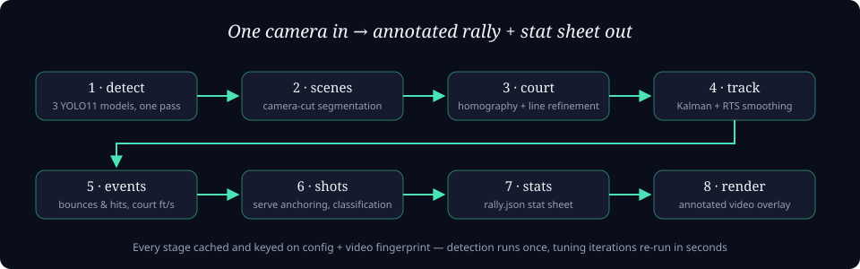
Detection: three models, one decode
Decoding video is expensive, so one pass feeds three YOLO11 models at different sampling rates: the ball detector sees every frame (it moves fastest), the player model every second frame, and the court keypoint model sparsely, since the court doesn't move between camera cuts.
Broadcast footage is the hard part
Real match footage switches camera angles constantly. A scene-segmentation stage detects hard cuts and dissolves from a lightweight grayscale decode, and everything downstream (court fitting, tracking, event detection) operates per camera segment. Camera angles the system can't verify are marked untrusted and left honestly unanalyzed rather than analyzed wrongly.
Geometry and tracking
Each segment gets a court homography refined against the painted lines themselves, pooling line evidence across multiple frames (typical residual: 2–4 pixels). Ball tracks are smoothed with a constant-acceleration Kalman filter plus RTS smoothing, then projected into court coordinates, so event thresholds are expressed in real feet per second, treating the near and far court equally.
Line calls, honestly
The projection from pixels to court coordinates carries error: roughly half a foot near the camera, one to two feet at the far baseline. A pickleball is under two inches wide. So for balls landing near a line, the measurement uncertainty is larger than the thing being measured.
When the uncertainty band around a landing spot crosses the line, the system doesn't guess. It renders an amber CLOSE, and only a clear OUT ends a rally. The goal on the canonical test clip: the correct call or an honest CLOSE, never a confident wrong one.
This is a statistician's design decision inside a computer vision system: report the interval, not just the point estimate. It's also what I'd want from any model making decisions that matter.
Evaluation: measured, not asserted
Three harnesses keep the project honest: a golden-clip regression suite (12 clips with known rally structure), an event-level precision/recall evaluation against hand-labeled bounces and hits, and a per-clip QA health report that surfaces the worst clips first.
A note on reading these numbers: detecting bounces and hits from a single camera is hard: contacts get occluded by players, broadcast footage cuts between angles, and a monocular view can't fully resolve ball height. The truth set is deliberately built from difficult clips, and the design prioritizes precision (0.72 for bounces) over recall, because a false line call is worse than a missed one. A modest number measured honestly against hard cases beats an impressive one measured conveniently, and the point of the harness is that every release either moves these numbers or gets rejected.
| Harness | Current result | Reading |
|---|---|---|
| Golden-clip regression | 12/12 pass | Rally structure, calls, and segmentation stay correct release-over-release |
| Bounce detection (70 labeled bounces) | P 0.72 · R 0.51 · F1 0.60 | Precision is strong; recall on side-view footage is the open gap |
| Hit detection (118 labeled hits) | P 0.54 · R 0.52 · F1 0.53 | Held steady while the truth set got harder; occluded contacts are the weak layer |
| Court truth set | 155 hand-labeled clips | Clicked court corners used to evaluate and retrain the court model |
Metrics are tracked in a history file across releases, and numbers are only compared within the same truth set. When a same-day reading turned out to be contaminated by stale artifacts, it was voided and documented rather than reported. Honest bookkeeping is a feature.
The dashboard
Every metric above lives on a static dashboard the pipeline regenerates after each eval round. Vitals at a glance, a scorecard per model, and version-to-version comparisons with rendered clips side by side. The trend line intentionally breaks wherever the truth set changed, because numbers measured against different ground truth are not comparable.
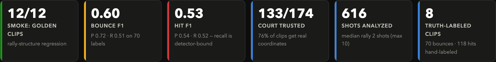
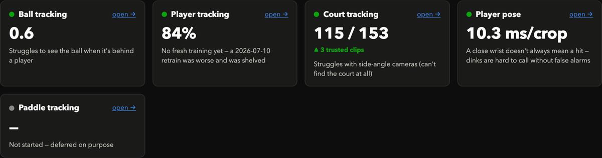
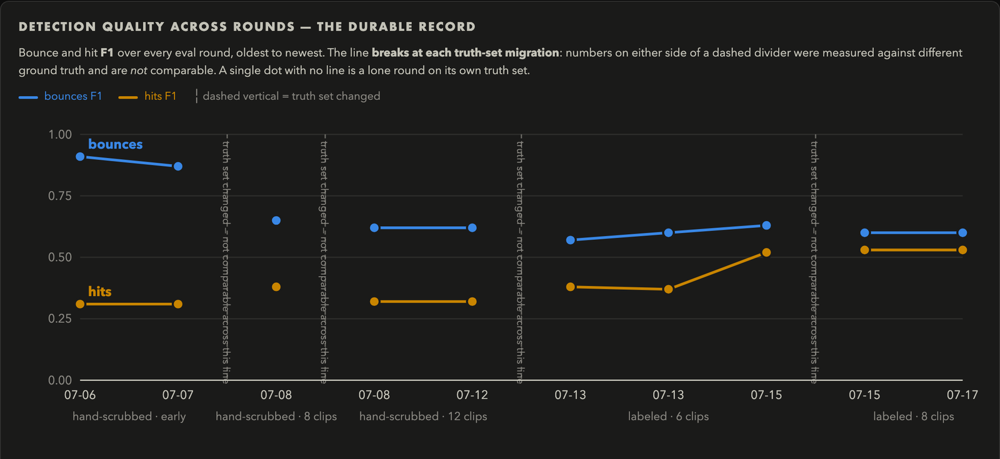
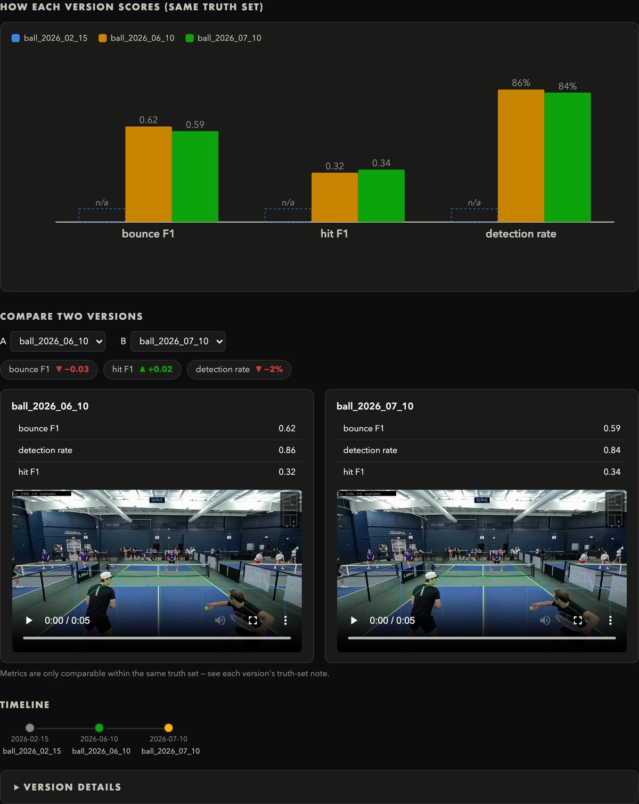
The data flywheel
The current phase is an MLOps loop: purpose-built labeling tools produce ground truth (court corners, ball positions, event timing, player identity), evaluation harnesses measure candidate model weights against that truth, and only weights that measurably improve get promoted. In the last evaluation round, the court model was promoted; the ball and player models were held, because the numbers said so.
Labeling tools, built for speed
Labeling throughput is the bottleneck, so each tool is a small browser app that shows the model's prediction first and asks the human only to confirm or correct it. Those verdicts double as a free accuracy measurement. Four labelers cover event timing, court corners, ball position, and player identity.
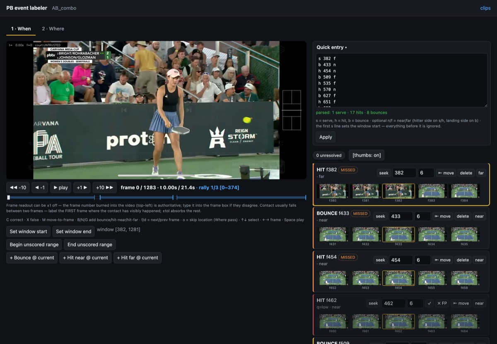
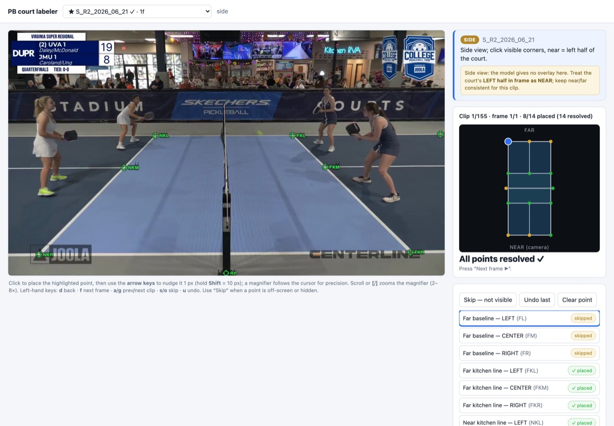
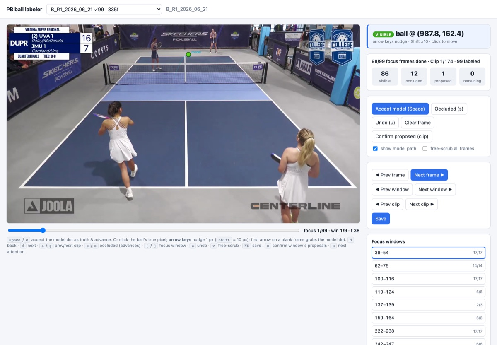
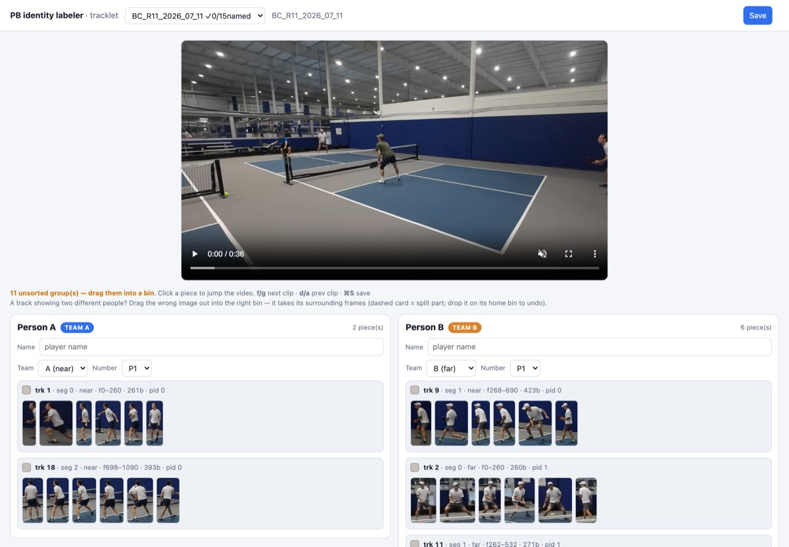
AI-reviewed pre-labels
Machine-generated labels get checked by two independent AI reviewers before a human sees them. Agreement auto-accepts, disagreement escalates, and contact sheets turn whole-clip QA into a ten-second scan.
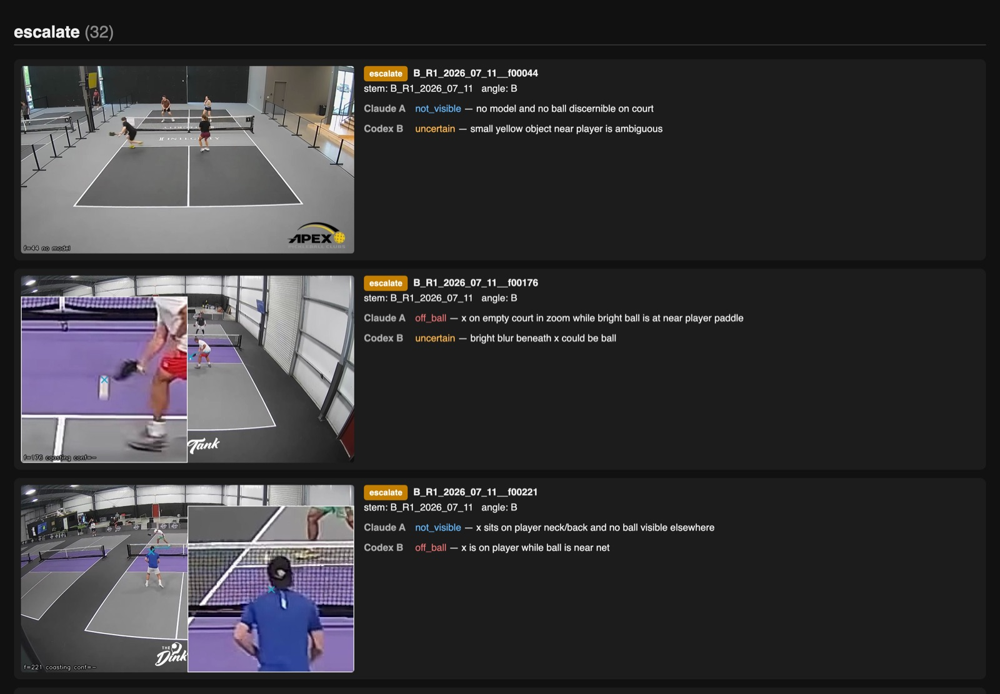
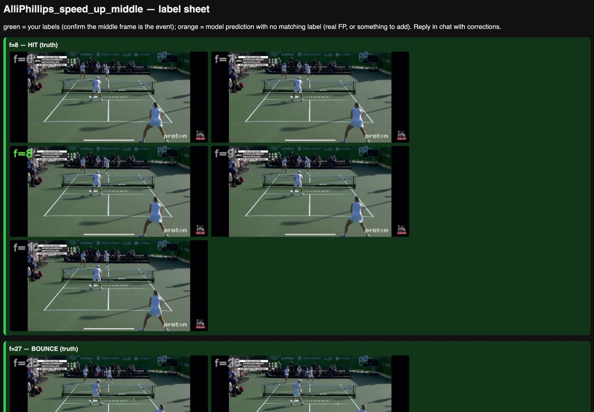
The stat sheet, next
The pipeline's end product is a machine-readable stat sheet per rally. This prototype explores how a player would actually read it: a coach-style report first, every chart backed by the pipeline's own schema, and anything synthetic clearly badged.
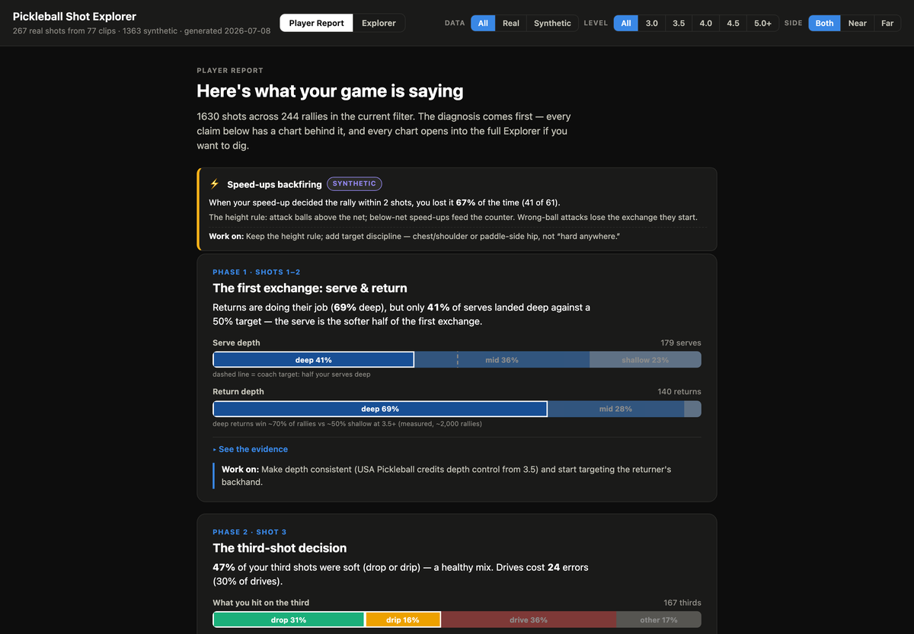
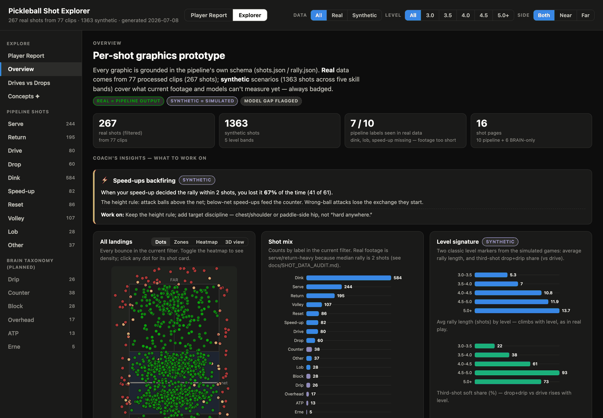
Known gaps
- Hit recall under occlusion: contacts hidden behind a foreground player leave no kinematic trace; fixing this needs occlusion-heavy retraining data (in progress via the labeling tools).
- Monocular height limits: one camera can't fully resolve ball height, so kitchen volleys can occasionally show a phantom bounce, and lob/dink labels rely on noisy height proxies.
- Untrusted segments stay unanalyzed: close-ups and extreme side angles are flagged rather than force-fit. By design, but it leaves broadcast gaps.
- Player identity is in progress; replays aren't deduplicated yet: the identity labeler above is building that ground truth, but shipped stats are still per side, and a replayed rally counts twice.
Stack & tooling
Green pills are tools built for this project. The rest are third-party tools used alongside them.
Built with AI-assisted development tools as force multipliers, with every result validated against hand-labeled ground truth and tracked metrics. The architecture decisions, the evaluation methodology, and the statistical judgment are mine.